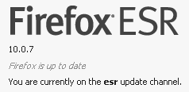
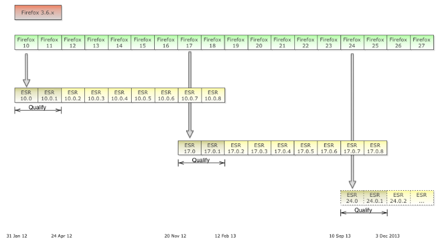

Firfox 在 2011 年 3 月釋出 4.0 之後，從 5.0 開始就採用 rapid release cycle，也就是每六週（cycle）釋出一個 major version。
|
|
採用 rapid release cycle 的 Firefox 會在自動在背景做更版的動作，可以從 Preferences > Advanced > Update 改掉。改成 Check for updates, but let me choose whether to install them 是個不錯的折衷。 |
這麼頻繁的釋出，對大型組織部署（mass deployment）跟管理上是個困擾，所以 2012 年 1 月時官方就宣佈了 Extended Support Release (ESR) 的方案：

-
每 9 個 cycle（也就是大概一年的時間）才釋出一次 ESR，兩個 ESR release 會重疊兩個 cycle。
-
中間的 regular release，都會跟著釋出 ESR 的 point release，主要是做 security update。

Figure 1. ESR Life Cycle （來源：Firefox Extended Support Release FAQ）
參考資料
網站
-
Firefox Extended Support Release for Your Organization, Business, Enterprise - Overview — mozilla.org - 從最下面的 Review our handy FAQ 點進下載頁面，不用加入 Enterprise Working Group (EWG)。
文件
-
Firefox Extended Support Release FAQ — mozilla.org - 對 ESR release cycle 有更詳儘的說明。
其他文件
-
檢視主題 - Firefox ESR企業版計劃啟動 • MozTW 討論區 (2012-01-12)